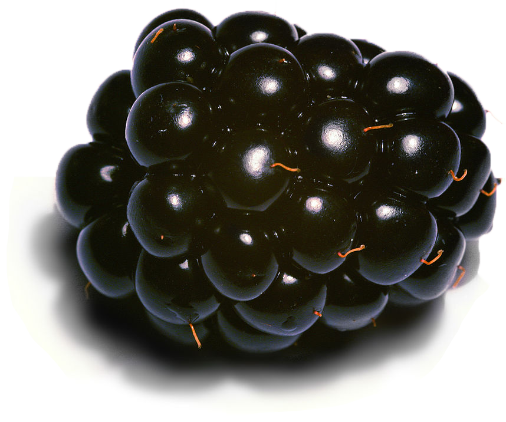

Blackberry
The blackberry is an edible fruit produced by many species in the Rubus genus in the Rosaceae family, hybrids among these species within the Rubus subgenus, and hybrids between the Rubus and Idaeobatus subgenera. The taxonomy of the blackberries has historically been confused because of hybridization and apomixis, so that species have often been grouped together and called species aggregates. For example, the entire subgenus Rubus has been called the Rubus fruticosus aggregate, although the species R. fruticosus is considered a synonym of R. plicatus.
What distinguishes the blackberry from its raspberry relatives is whether or not the torus (receptacle or stem) 'picks-with' (i.e. stays with) the fruit. When picking a blackberry fruit, the torus does stay with the fruit. With a raspberry, the torus remains on the plant, leaving a hollow core in the raspberry fruit.
The term 'bramble', a word meaning any impenetrable thicket, has traditionally been applied specifically to the blackberry or its products, though in the United States it applies to all members of the Rubus genus. In the western US, the term caneberry is used to refer to blackberries and raspberries as a group rather than the term bramble.
The usually black fruit is not a berry in the botanical sense of the word. Botanically it is termed an aggregate fruit, composed of small drupelets. It is a widespread and well-known group of over 375 species, many of which are closely related apomictic microspecies native throughout Europe, northwestern Africa, temperate western and central Asia and North and South America.